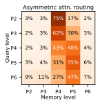
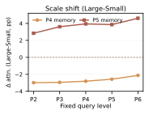
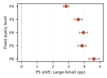
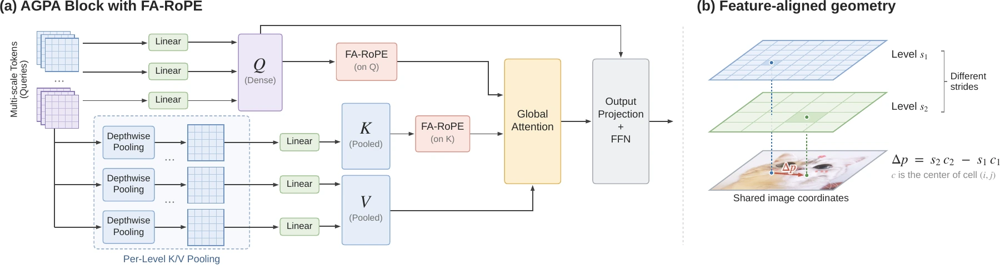
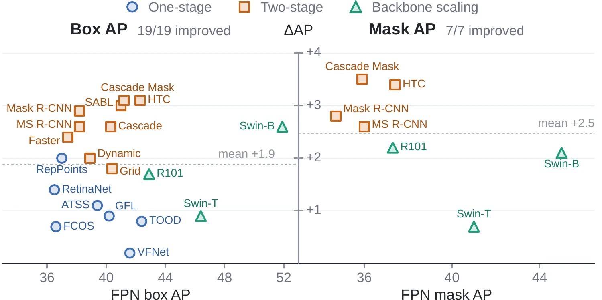

Where does each location look?
For each object, we sample a query at its center on every output grid and measure how AGPF distributes attention across source levels. This lets us compare objects of different sizes at the same output resolution.
Routing by object size

Across all objects, queries on the finest grid (P2) assign 74.9% of their attention to P4, two levels coarser.
The shift at fixed output resolution

At every output level, queries for large objects give less weight to P4 and more to P5 than queries for small objects.

P5 gains 2.8 to 4.6 percentage points. The confidence intervals are above zero at all five output levels.
Default AGPF-S with pooled memory on COCO val2017. Attention is averaged over objects and heads, with 36,334 object-centered queries per output level across all sizes.
Locations on the same output grid can draw context from different scales.
Dense outputs, compact context.
AGPF expresses pyramid fusion as joint retrieval. Dense queries read from a smaller memory containing features from every level.

Keep every output location
The prediction grids stay dense and retain the interface expected by existing heads.
Share a compact memory
Pooling fine-level memory reduces the cost of joint attention across the pyramid.
Use one spatial reference
FA-RoPE places tokens in image coordinates so that different strides have consistent spatial meaning.
The same block can be stacked for deeper fusion, yielding AGPF-S, AGPF-B, and AGPF-L.
Useful across prediction architectures.
Replacing FPN improves every evaluated detection and instance segmentation configuration, spanning one-stage, two-stage, and cascade detectors with convolutional and Transformer backbones.

From objects to scene labeling
| Task / dataset | Framework · backbone | Metric | FPN | AGPF | Gain |
|---|---|---|---|---|---|
| Detection · COCO | Cascade Mask R-CNN · R50 | Box AP | 41.2 | 42.9 | +1.7 |
| Instance segmentation · COCO | Cascade Mask R-CNN · R50 | Mask AP | 36.0 | 38.3 | +2.3 |
| Semantic segmentation · ADE20K | UPerNet · R50 | mIoU | 40.7 | 43.7 | +3.0 |
| Semantic segmentation · Cityscapes | K-Net · Swin-L | mIoU | 82.3 | 83.5 | +1.2 |
| Panoptic segmentation · COCO | Panoptic FPN · R50 | PQ | 42.5 | 46.4 | +3.9 |
Detection and instance segmentation use AGPF-S in these rows. The semantic and panoptic examples use AGPF-B (R50) and AGPF-L (Swin-L).
Local detail with a wider spatial dependence.
Gradient-based dependency maps show which input pyramid features influence a query. AGPF retains a strong local response while extending its dependence to more distant regions.
FPN
AGPF-S
Paired queries use the same object and pyramid level. White boxes indicate target objects and markers indicate query locations. These are feature dependency visualizations.
Read the abstract
Feature pyramids provide dense predictors with features at several spatial resolutions. However, it remains largely unexplored which pyramid levels each output location should aggregate information from. We investigate this question by allowing each output location to attend to features from every pyramid level and measuring how attention is distributed across scales. Surprisingly, locations on the finest output grid allocate approximately 75% of their attention to features two levels coarser, rather than to the current or adjacent levels. Even on the same output grid, the balance shifts toward coarser features as object size increases. These observations motivate Asymmetric Global Pyramid Fusion (AGPF), a neck that preserves the original output grids while allowing each location to dynamically select its contextual sources across scales. Each location interacts with a multiscale memory whose features are aligned in image coordinates, enabling flexible cross-scale aggregation without altering prediction resolutions. Compared with FPN, AGPF improves all 19 object detection and all seven instance segmentation configurations evaluated on COCO. A single fusion block improves Cascade Mask R-CNN by 1.7 box AP and 2.3 mask AP, and the gains consistently transfer to semantic and panoptic segmentation.
Citation
@misc{yang2026agpfdynamicsourceselection,
title={AGPF: Dynamic Source Selection for Feature Pyramid Fusion},
author={Xu Yang and Gady Agam},
year={2026},
eprint={2611.19836},
archivePrefix={arXiv},
primaryClass={cs.CV},
url={https://arxiv.org/abs/2611.19836},
}